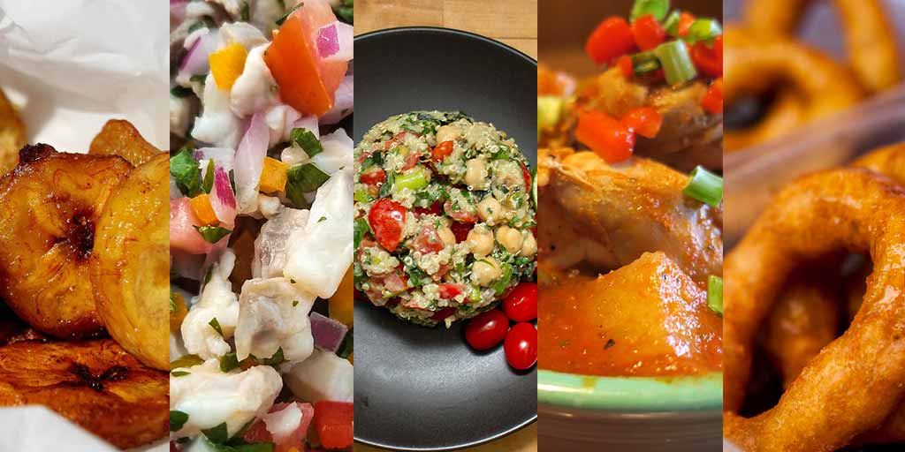

Discover the vibrant and rich flavors of Peruvian cuisine, where centuries-old traditions meet modern influences. Whether you're new to cooking or an experienced chef, our easy-to-follow recipes bring the heart of Peru straight to your kitchen.
From the famous Ceviche and hearty Lomo Saltado to comforting Aji de Gallina, we’ve got a wide range of dishes for every taste.
